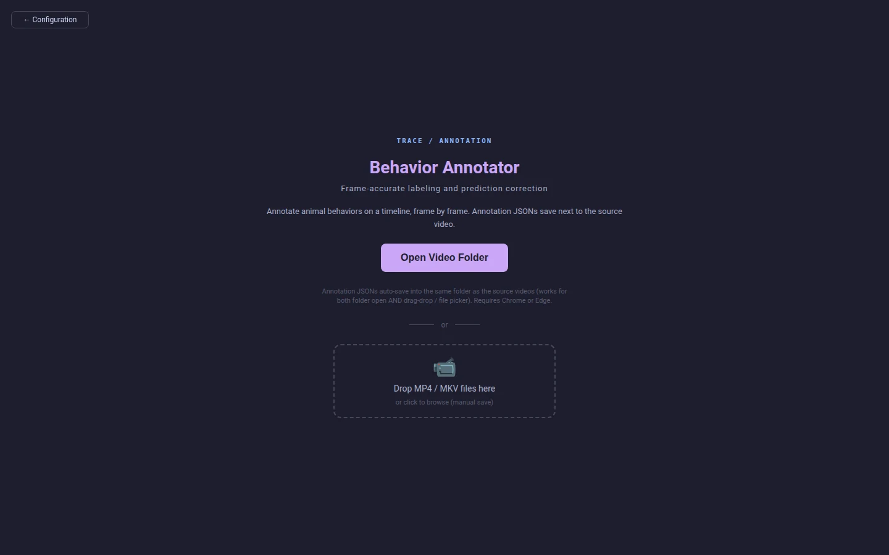
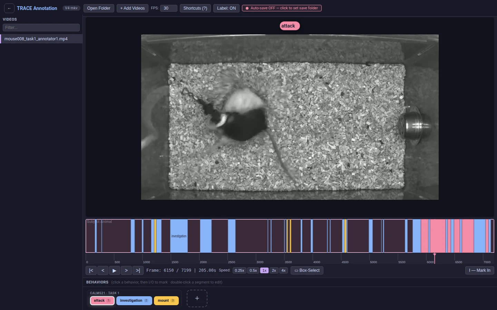
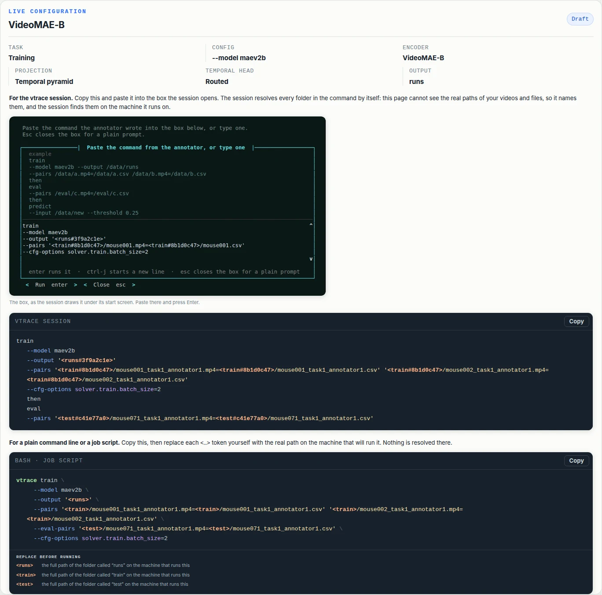

Document
Every step, in full.
The overview says what V-TRACE does. This says exactly how: the flags each command takes, the files a run reads and writes, and the reasons behind the defaults you would otherwise have to guess at.
01
Install and run
V-TRACE needs Python 3.9 or newer. Training, evaluation and
prediction need a CUDA-capable PyTorch environment and exit with a
clear message if torch.cuda.is_available() is false.
Annotation needs neither: it runs entirely in the browser.
$ python -m pip install vtrace-behavior
$ vtrace prepare --weights all
$ vtrace
vtrace prepare downloads model weights ahead of time and
makes sure ffmpeg and ffprobe are on PATH,
fetching bundled copies when they are not. Its
--weights flag takes none,
all, or one preset name.
The interactive session
Run vtrace with no arguments at a terminal and it opens
a session: the annotator starts on a background thread, the start
screen prints the address it is listening on, and a bordered
command box opens under it. The box is where the
command the configuration page wrote goes — paste it,
press Enter, and it runs. Ordinary commands
(demo download, help) run from the same box.
Esc closes it and leaves the plain vtrace >
prompt, where commands are typed without repeating the program's
name, arrow keys walk the history, run opens the box
again and exit leaves. Anywhere without a terminal, the
same screen is printed and the program returns rather than waiting
for input it will never get.
There is no tab completion and no reverse history search. The command set is short enough to read off the screen above, and a session that prints its whole surface on arrival does not need a second, hidden way to discover it.
██╗ ██╗ ████████╗██████╗ █████╗ ██████╗███████╗
██║ ██║ ╚══██╔══╝██╔══██╗██╔══██╗██╔════╝██╔════╝
██║ ██║ ███╗ ██║ ██████╔╝███████║██║ █████╗
╚██╗ ██╔╝ ╚══╝ ██║ ██╔══██╗██╔══██║██║ ██╔══╝
╚████╔╝ ██║ ██║ ██║██║ ██║╚██████╗███████╗
╚═══╝ ╚═╝ ╚═╝ ╚═╝╚═╝ ╚═╝ ╚═════╝╚══════╝
Video-based Temporal Recognition and Annotation of
Continuous Ethograms of Animal Behavior v1.0.0
Annotator running — open it in Chrome or Edge
http://localhost:8765 read and label videos on this computer
Type one of these and press enter:
run open the command box: paste what the annotator wrote
demo download the official CalMS21 videos + the detector
demo predict label the 19 held-out test videos, write predictions
demo train train on the 70 official training videos, score the test split
help documentation, on the web
exit leave the session
The box below is run — paste what the annotator wrote, or type one.
Esc leaves the box and comes back to this list.Every line on the screen is a real command, so whatever is copied goes through the ordinary argument parser.
Under the start screen, the box. What is pasted into it is the
session form the configuration page writes: a keyword per line, the
flags under it, and then between steps. The folders in
it are named, not located — <train#8b1d0c47>
is the folder called train whose contents hash to those
digits — and the first thing the session prints is where it
found each one on this machine. Enter runs;
ctrl-j starts a new line by hand; Esc closes
the box. From a shell the same chain is one command line, with the
folders written out.
train
--model maev2b
--output '<runs#3f9a2c1e>'
--pairs '<train#8b1d0c47>/mouse001.mp4=<train#8b1d0c47>/mouse001.csv'
then
eval
--pairs '<test#c41e77a0>/mouse071.mp4=<test#c41e77a0>/mouse071.csv'enter runs it · ctrl-j starts a new line · esc goes back to the list
<runs#3f9a2c1e> → /data/calms21/runs
<train#8b1d0c47> → /data/calms21/train
<test#c41e77a0> → /data/calms21/test
=== step 1/2: train --model maev2b --output /data/calms21/runs … ===The box leaves the mouse to the terminal: while it is open, text on the screen can still be selected and the scrollback still scrolls, so the last command's output stays within reach. The two buttons are reached with tab, and their key is printed on them. Escape cancels, but the binding is deliberately not eager. Every sequence a terminal sends begins with an escape byte — an arrow key, a bracketed paste — and an eager binding would close the box on the first byte of any of them.
The annotator on its own
vtrace app serves the annotator without the session, on
port 8765 or the next free port up to 8784. It binds loopback only.
Over SSH, forward the port rather than looking for a host flag:
# on your laptop
$ ssh -L 8765:localhost:8765 you@your-gpu-box
# in that session, on the GPU box
$ vtrace app
Annotator on http://localhost:8765 — open it in Chrome or Edge
# then open http://localhost:8765 in the laptop's browserLoopback only, and nothing is lost by it. The page reads videos from the computer running the browser, and the command it writes names folders rather than paths — so whichever machine the command is pasted into is the one that looks them up. Forwarding the port over SSH is the whole story.
02
The annotator
The annotator is one static HTML page. It reads videos and writes annotations through the File System Access API, so use Chrome or Edge; Firefox and Safari do not implement it and the page falls back to typed paths. Nothing is uploaded and there is no server-side state.
The handle for the last folder is kept in IndexedDB, so a reload reopens it by itself when the browser still holds the permission, and otherwise offers a one-click Reopen "<folder>" on the welcome screen. What the browser hands the page is a capability rather than a location, and a capability is exactly the kind of thing a browser may decide to ask about again.
The two pages do not share a folder. Choosing one on the Configuration page stores it for the command that page is writing; it does not open anything here, and the annotator's own pick does not change the command. The single thing that does cross over is measurement: Configuration probes each video's real frame rate, and the annotator prefers that over its toolbar default so frame numbers stay honest in a folder that mixes rates.

It is served over http://localhost rather than opened as
a file:// URL for one reason that survives testing:
every file:// page on a machine shares one origin, so a
second copy of the page, or any other local page, would read the same
IndexedDB down to the stored directory handles. Serving gives the page
an origin of its own. Opened as a file it still works, and writes the
same commands — folders are named in them either way.
Labeling
Click a behavior in the palette, then I at the start of a bout and O at the end. Arrow keys step one frame; Shift with them jumps a second. Each bout is stored as a time span and a frame span, so nothing drifts on a variable-frame-rate recording.

mouse008_task1_annotator1, part-way through
labeling. The label under the playhead is drawn over the video;
the strip below is the whole recording at once.
Annotations auto-save 500 ms after an edit into
<video>.csv, in the same folder as the source
video — the same file vtrace train --pairs reads.
Reviewing predictions
A prediction file is written beside the video it describes, in the shape the annotator imports. Open that folder in the annotator and each predicted bout can be accepted, rejected or corrected on the same timeline the labelling happened on.
corrected.
The configuration page
The annotator's other page turns a folder and a recipe into the
command that runs them. A browser is never told where a picked
folder lives, only what it is called and what is in it — so
the command names the folder rather than locating
it: <train#8b1d0c47>/mouse001.mp4. The name is the
folder's own; the eight digits after # are a fingerprint
of its contents (the sorted names of its videos, or of everything in
it when it holds none). The vtrace session looks the name
up on the machine the command is pasted into and keeps only the
folder whose contents match, so a same-named folder somewhere else
is never taken. That machine is the only one whose paths matter: a
folder mounted onto a laptop for annotation has a different path on
the GPU box that trains on it, and the same name and files on both.

Only the session resolves. A plain
vtrace train … from a shell or a job script refuses a
token and prints what to replace it with — a job on a cluster
runs unattended, where a lookup that guesses or asks is worse than
one that never starts. The shell form on the page is written for
that: bare tokens, and the list under them —
<train> → the full path of the folder called
“train” on the machine that runs this.
An empty output folder has nothing to fingerprint, so the page leaves
a .vtrace-folder marker in it (eight hex digits) and the
session matches on that instead. Folders once found are remembered
in ~/.vtrace/folders.json, and
VTRACE_ROOTS=/data:/mnt/lab adds places to search when
the data is nowhere near the working directory.
03
Training data
Every command that reads annotated video takes explicit pairs. Each
pair is VIDEO_PATH=ANNOTATION_PATH, both full paths;
relative ones resolve against the working directory. A pair names
its own files, so there is no folder to set first, and one source
video can have several annotation files beside it with each pair
choosing which to use. The annotation is the CSV described below,
or a <video>.json written by an earlier version
of the annotator (a combined annotations.json works too;
the video's entry is found by its stem) — both are read the
same way, so a folder labeled before the switch trains without a
conversion step.
labelId, timestamp, endTimestamp
investigation, 5.433, 6.533
investigation, 9.267, 9.633
investigation, 38.467, 40.267
mount, 40.267, 41.500
attack, 196.933, 201.300
Real bouts from CalMS21 mouse008_task1_annotator1.
Times are seconds. Containers may be .mp4,
.avi, .mov, .mkv or
.webm, mixed freely within one run. Padding the columns
so they line up is optional and harmless — the reader trims the
header and the values.
- labelId
- The behavior name. Free text; the class map is built from whatever appears across the run's videos.
- timestamp
- Where the bout starts, in seconds.
- endTimestamp
- Where it ends, in seconds.
Seconds are the only timing input. Prep maps each bout onto frames itself, by searching the video's own presentation timestamp table — so a frame number written into the CSV would be ignored, and a wrong one could not do any harm. That is also why a variable-frame-rate recording needs nothing special from you.
Columns the annotator adds
A CSV that has been through a review pass carries three more
columns. Two of them are for the annotator's benefit; only
review changes what training sees.
# trace-meta: {"annotation_version": "behavioral-annotator-v1",
# "fps": 30, "duration": 240, "frame": 7200}
labelId, timestamp, endTimestamp, score, source, review
investigation, 5.433, 6.533, , ,
mount, 40.267, 41.500, 0.9412, model, accepted
attack, 196.933, 201.300, 0.8815, model, corrected
attack, 234.900, 236.633, 0.4102, model, rejected- score
- The model's confidence, for a bout that came from one. Empty for a hand label.
- source
model, or empty. Without it a reviewed prediction would come back as an anonymous human label with the confidence gone.- review
pending,accepted,rejectedorcorrected. Prep skipsrejectedrows — a bout the reviewer threw out is a false positive, and training must never see it. It stays in the file so the decision travels with the dataset.
What preparation writes
Preparation runs automatically as the first part of a training or
evaluation command. It indexes each video whole and leaves one
folder beside the source, <video>.vtrace/,
holding everything cached for that video:
-
pts.npypluspts.meta.json: the per-frame presentation timestamps, so a variable-frame-rate recording maps times to frames correctly instead of assuming a constant rate, and the source's size and mtime at the moment they were read, which is how a stale table is recognised. -
proxy/<geometry>/proxy.mp4: one downscaled, frame-aligned decode proxy, reused across runs while the source's size and mtime still match itsmanifest.json. -
dataset.jsonandclassmap.txtin the run folder: the annotation index and the sorted class names.
$ ls -1 /data/mouse_study/videos
mouse001.mp4
mouse001.csv # your labels
mouse001.mp4.vtrace/ # everything cached for this video
├── pts.npy # per-frame timestamps
├── pts.meta.json
└── proxy/s144_sq_crf23_g30_v1/ # one decode proxy per geometry
├── proxy.mp4
└── manifest.json # source signature, for reuse
mouse002.mp4
mouse002.csv
…
Clips are virtual — no clip files are written. Each
dataset.json entry records source_video
plus source_frame_offset and
source_pts_table, which stay authoritative for all
timeline maths, and proxy_video, which only redirects
which file frames decode from.
Finding out about a new release
The session asks PyPI whether there is a newer V-TRACE while it
starts, and when there is, the start screen carries an
update row naming the version. Typing
update installs it. Nothing appears when you are on the
current release, which is why the row is news rather than furniture.
The answer is cached in ~/.vtrace/update-check.json and
refreshed at most once a day, so nearly every launch reads a file and
costs nothing measurable. The refresh itself runs on a background
thread started before the annotator's server, and the screen waits no
more than a second for it — a check that misses that deadline lands
in the cache and shows up the next time you start. A machine that
cannot reach PyPI records the attempt like any other, so it asks once
a day rather than once a launch, and never shows an error for a
question nobody asked.
Watching a long preparation
An overnight recording is millions of frames, and making its
decode copy is the longest single wait the tool has. So it is shown
rather than left blank: a bar with the share done, the time still
to go, and the encoder that is doing it. The last of those is
worth reading — GPU NVENC means the card took the
encode, CPU x264 means it did not, either because
there is no usable card or because the proxy is smaller than
NVENC's minimum frame size.
Preparing the train dataset 2 videos
2/2 reading timestamps 2026-06-13 17-06-54-day9
2/2 making a smaller copy ━━━━━━╸━━━━━━━━━ 28% eta 1h 48m GPU NVENC 12.4xThe bar is redrawn in place and wiped when it ends, so it leaves no scrollback behind; an encode that ran for more than a minute leaves one line saying how long it took and on what. Where there is no terminal to redraw into — the annotator's job log, a captured run — the same figures are written out as an ordinary line every couple of minutes instead.
{ "database": {
"mouse001": {
"frame": 7200,
"duration": 240.033,
"subset": "training",
"source_video": "/data/…/mouse001.mp4",
"source_frame_offset": 0,
"source_pts_table": "/data/…/mouse001.mp4.pts.npy",
"proxy_video": "/data/…/proxy.mp4",
"annotations": [
{ "label": "investigation",
"segment": [0.95, 2.4],
"timestamp_sec": [0.95, 2.4],
"frame_segment": [29, 71] }, …
]
}
} }Nothing is split. Every video a command names is training data, and evaluation videos are a corpus of their own that you name separately. Holding a slice of the training recordings back would be the same decision made worse, since it would be made without looking at them.
04
Training
Training takes the pairs, optionally where the run folder goes, and
optionally the videos that will score it. Without --output
the run lands in runs/ under the working directory —
never beside the videos: a corpus is an input many runs read, and none
of them should write its checkpoints there just because nobody said
otherwise.
$ vtrace train --model maev2b \
--output /data/calms21/runs \
--pairs /data/calms21/train/mouse001.mp4=/data/calms21/train/mouse001.csv \
/data/calms21/train/mouse002.mp4=/data/calms21/train/mouse002.csv \
--eval-pairs /data/calms21/test/mouse071.mp4=/data/calms21/test/mouse071.csv
Preparing 2 videos …
mouse001.mp4 242 bouts over 712.1s (kept whole)
mouse002.mp4 198 bouts over 654.9s (kept whole)
Classes: attack, investigation, mount
Run folder: /data/calms21/runs/model_20260827_014500
epoch 2/10 loss 0.641 mAP 0.703
epoch 6/10 loss 0.284 mAP 0.884
epoch 9/10 loss 0.183 mAP 0.912 ← best.pth| Flag | Default | What it does |
|---|---|---|
--pairs | required | The training videos and their CSVs. |
--output | runs/ under the working directory | Where the model_YYYYMMDD_HHMMSS/ folder is created. |
--eval-pairs | none | Videos the loop scores each epoch against. Their score is what writes best.pth. |
--model | maev2b | Model preset. --config overrides it with a config file. |
--epochs | the config's own | Total epochs. The shipped presets run 10, warming up over 2. |
--val-start-epoch | the config's own | First epoch scored against the evaluation videos. |
--val-interval | the config's own | Epochs between evaluation passes. |
--input-resolution | the config's own | 112 to 256. Also sets the decode-proxy geometry, so the proxies match what training will read. |
--resource-profile | the config's own | low, balanced, high, or auto to benchmark the dataloader first. |
--resume | none | Continue from a checkpoint. |
--cfg-options | none | Raw key=value config overrides. |
The epoch and resource flags all default to leaving the config alone. A number emitted here that nobody chose would silently replace the one the config author did choose.
# four GPUs, a longer schedule
$ vtrace train --epochs 20 --output /data/calms21/runs \
--pairs /data/calms21/train/*.mp4=…
# the heavier preset, at a larger input resolution
$ vtrace train --model vjepa2 --input-resolution 224 \
--output /data/calms21/runs --pairs /data/calms21/train/mouse001.mp4=/data/calms21/train/mouse001.csv
# let the dataloader benchmark itself first
$ vtrace train --resource-profile auto --output /data/calms21/runs \
--pairs /data/calms21/train/mouse001.mp4=/data/calms21/train/mouse001.csvWhat decides best.pth
Every epoch is checkpointed to checkpoint/epoch_N.pth.
With evaluation videos, the loop scores each pass and the highest
scoring epoch is published as best.pth. Without them
nothing measured any epoch, so the run publishes the last one as
last.pth instead. Either way the run folder is complete
and loadable.
Evaluation videos have to be named before training, not after. A score computed on a finished model can report a number, but it can no longer choose which epoch to keep.
05
Evaluation
vtrace eval scores a finished model. Given
--pairs it prepares those videos and scores on them.
Given none, it re-scores the run on the same corpus it validated
against during training; a run trained without evaluation videos has
no such corpus and says so rather than failing later.
# re-score on the corpus the run already validated against
$ vtrace eval --model-dir /data/calms21/runs/model_20260827_014500
# or on a held-out corpus of your own
$ vtrace eval --model-dir /data/calms21/runs/model_20260827_014500 \
--pairs /data/calms21/test/mouse072.mp4=/data/calms21/test/mouse072.csv
mAP (all frames, background-aware) 0.9118
attack 0.883 mount 0.874
investigation 0.978
precision / recall / F1 @ 0.31 0.887 / 0.902 / 0.894
Results: …/model_20260827_014500/eval_20260827_020000/
Results land in an eval_YYYYMMDD_HHMMSS/ folder inside
the model directory:
metrics.json: the scored summary.recommended_thresholds.json: cutoffs tuned on the validation split, so a later held-out evaluation can report precision, recall and F1 at a threshold chosen without looking at the held-out data.result_detection.json: the raw per-frame scores, for anyone computing their own metrics.
{
"subset": "validation",
"global": 0.31,
"per_class": {
"attack": 0.22,
"investigation": 0.41,
"mount": 0.35
}
}
vtrace predict reads this file back and applies the
per-class cutoffs when --threshold is omitted, so the
value a prediction is filtered at is one that was tuned somewhere
other than the data being predicted.
06
Prediction
vtrace predict takes a model folder and either one video
or a directory of them. No annotations are needed.
$ vtrace predict --model-dir /data/calms21/runs/model_20260827_014500 \
--input /data/new_recordings \
--include-stems mouse071 mouse072 \
--threshold 0.25
Prediction CSV: /data/new_recordings/mouse071.pred.csv (214 bouts)
Prediction CSV: /data/new_recordings/mouse072.pred.csv (188 bouts)
Each video gets one <stem>.pred.csv written
beside it. Re-running replaces that file rather than accumulating
timestamped folders, so a video has exactly one current prediction.
--output can redirect them, at the cost of the
arrangement the review step depends on.
# trace-meta: {"trace_prediction_version": 1,
# "video": "mouse071.mp4",
# "class_map": ["attack", "investigation", "mount"],
# "threshold": 0.25}
labelId, timestamp, endTimestamp, score, predictionId
investigation, 12.433, 15.900, 0.9412, mouse071::0
attack, 20.167, 23.033, 0.8815, mouse071::1
mount, 41.200, 48.767, 0.7604, mouse071::2
investigation, 63.500, 64.133, 0.3110, mouse071::3- labelId
timestamp
endTimestamp - The annotation format, unchanged — which is what lets a prediction file import straight back into the annotator.
- score
- The model's confidence in the bout.
--thresholdis the minimum needed to reach the file at all; it defaults to the run's tuned cutoffs, or 0 when there are none. - predictionId
<stem>::<n>. Stable within a file, so a review decision has something to name.- # trace-meta
- Which video, which classes, which cutoff. Skipped by every reader, so the provenance rides along without becoming a column.
--include-stems restricts a directory input to named
videos. Once the file is reviewed in the annotator it is saved back
with source and review columns filled in,
and is then an ordinary training annotation file.
07
Chaining steps
Steps chain with the bare word then. Splitting happens
before any parsing, so a chain reads the same typed at the
vtrace > prompt and pasted into a shell.
$ vtrace train --output /data/calms21/runs \
--pairs /data/calms21/train/mouse001.mp4=/data/calms21/train/mouse001.csv \
then eval --pairs /data/calms21/test/mouse071.mp4=/data/calms21/test/mouse071.csv \
then predict --input /data/new_recordings
A later step reuses the model the training step produced, so its
timestamped folder never has to be typed. Passing
--model-dir explicitly overrides that.
train ... then eval ... is one run, not two.
The eval step names the videos the training loop scores each epoch
against, which is what picks best.pth, so it has to be
known before training starts. An eval that follows
anything else keeps its ordinary meaning: score a model that already
exists.
then is a bare word rather than the next verb itself
because --pairs takes one or more values and would
otherwise swallow a following eval as a filename.
08
What a run writes
A training run creates one self-contained folder. Everything needed
to rebuild and reuse the model is inside it, so
--model-dir is the only thing evaluation or prediction
ever needs to be told.
model_20260827_014500/
├── best.pth # or last.pth, when no epoch was scored
├── classmap.txt # the class names, in training order
├── config_resolved.py # the configuration the run actually used
├── config.txt # the config file it started from
├── dataset.json # the training corpus index
├── prep.log # per-video detail from indexing
├── checkpoint/ # epoch_0.pth, epoch_1.pth, ...
├── eval_data/ # the evaluation corpus, when the run had one
│ └── dataset.json
└── eval_20260827_020000/
├── metrics.json
├── recommended_thresholds.json
└── result_detection.json- best.pth
- The highest-scoring epoch. Only exists when the run had evaluation videos.
- last.pth
- Stands in when it did not: nothing measured any epoch, so none is called best. Evaluation and prediction read whichever is there.
- classmap.txt
- One class name per line, sorted. A line's index is the class index the head emits.
- config_resolved.py
- Bases merged, every override applied, class count as detected from the data.
- config.txt
- The path of the config the run started from. Kept for provenance, not for loading.
- dataset.json
- The training corpus index.
eval_data/dataset.jsonis the evaluation corpus, separately — the training one labels every videotrain, so an evaluation pass cannot read it. - prep.log
- What indexing found in each video: frame count, measured rate, resolution, bouts read, and which decode proxy the frames will come from. Indexing 89 videos prints one line each; this is the rest of it.
Evaluation and prediction load config_resolved.py rather
than config.txt, so editing the config a run started
from cannot change how a finished model is rebuilt.
09
Models and weights
Three presets ship with the package. Each names its starting weights by filename rather than bundling them.
| Preset | Backbone | Training |
|---|---|---|
maev2b | VideoMAE V2 ViT-B/16 | ViT frozen, per-block adapters trained. The default. |
maev2b-distilled | the same ViT-B | As above, but the adapters start from a V-JEPA 2 distillation instead of random init. |
vjepa2 | V-JEPA 2 ViT-L | Upper half of the encoder fine-tuned. Heavier in every direction. |
None of them names a dataset. Preparation supplies the paths and the class count per run, so the same preset fits any corpus.
$ vtrace prepare --weights all
vit_b_k710_dl_from_giant.pth ✓ cached
vjepa2_vitl_fpc64_256.pth ↓ 1.2 GB …
sha256 ok → ~/.vtrace/pretrained/
# put the cache somewhere else
$ export TRACE_WEIGHTS_DIR=/scratch/vtrace-weights
# or fetch only what one preset needs
$ vtrace prepare --weights maev2b
A registered weight file is fetched from the project's GitHub release
on first use, checked against its SHA256, and cached under
~/.vtrace/pretrained so later runs and other configs
reuse the same copy. Set TRACE_WEIGHTS_DIR to put the
cache elsewhere. No checkpoint is bundled in the repository or the
wheel.
10
The CalMS21 demo
The demo is the complete CalMS21 Task-1 mouse social-behavior benchmark in its official split: 70 training videos and 19 test videos. It is a real run on a published benchmark, not a smoke test.
vtrace > demo predict # label a held-out video, write its predictions
Predicting on mouse083_task1_annotator1.mp4
22 bouts across 2 behaviors → mouse083_task1_annotator1.pred.csv
investigation 17 bouts 39.8s 24.4% best 0.88
mount 5 bouts 18.3s 11.2% best 0.92
58.1s of 163s labelled (36% of the recording)
annotated ━█████████━━━███━━━━━━━━━━█━━━━━━━████━━━█━━█━█━━━━━█████━━━█━━━━
predicted █████████━━━━██━━━███━━━━━█━━━━━━━█████━━━━━█━█━━━━━████━━━━━━━━█━━━━
0s 41s 82s 122s 163s
█ investigation █ mount
annotated (32) predicted (22)
investigation 0.9–16.7s investigation 0.6–16.0s
investigation 22.8–25.3s investigation 22.5–25.4s
investigation 25.7–26.3s investigation 30.3–32.0s
… 24 more
Against the CalMS21 annotation for this video (4881 frames, threshold tuned per class)
threshold precision recall F1
investigation 0.64 0.80 0.81 0.80
mount 0.12 0.91 0.84 0.87
macro F1 0.84
thresholds tuned on this video, so this is the best it can do here
Review them in the annotator
2. Open Video Folder → ~/.vtrace/demo/videos/test
vtrace > demo download # fetch the videos (train ~19 GB, test ~11 GB)
Fetching 70 train videos (18.83 GB) from https://data.caltech.edu/…
into ~/.vtrace/demo/videos/train
ctrl-c stops it.
all 53 ━━━━━━━━━━━━━━━━━━━━━━━━━━━━━━━━━━━━━━━━━━━━━ 67% 8.6/12.8 GB 6.7 MB/s 10:23
9/53 mouse018….mp4 ━━━━━━━━━━━━━━━━━━━━━━━━━━━━━━━━━━━━━━━━━━━━━ 42% 104.9/248.4 MB 6.7 MB/s 00:22
vtrace > demo train # prep and train on the 70 training videos
Training on 55 CalMS21 videos
15 more, split out of the same 70 by behavior, score each epoch
the benchmark's 19-video test split stays held out
324 iterations/epoch × 10 epochs — about 3 h on one modern GPU, ~23 GB VRAM.V-TRACE re-hosts none of the video. The annotation CSVs, the class map and the video manifest ship inside the package at about 450 KB; the recordings come from the official CalMS21 release, one member at a time over HTTP range requests. Nothing pulls the full 28 GB archive.
Where it goes, and stopping it
The demo tree is ~/.vtrace/demo, with the videos under
videos/train and videos/test. Set
TRACE_DEMO_DIR to put it somewhere else — worth doing
when $HOME is a small system disk, since the full split
is about 30 GB. A source checkout that already carries
data/calms21_demo/ is used ahead of the cache.
Ctrl-C is safe at any point. Each video is written
to a .part file and moved into place only once it is
complete, so an interrupt can never leave a half-file that the next
run would mistake for a finished download. Re-running skips every
video already on disk and picks up at the ones it was working on.
Four videos are fetched at once by default, each on its own connection — a ZIP handle keeps a single file position, so workers cannot share one. The cost is one extra small ranged read of the archive's tail per worker for the whole run, not per file.
Resuming is per video, not per byte. The archive's members are DEFLATE-compressed, and a deflate stream has no restart point — reaching byte N of a member means inflating everything before it, so the video that was in flight has to be fetched again from its first byte. The partial file is deleted on interrupt rather than kept, since no later run could read it. The finished videos around it cost nothing to re-check and are skipped.
--split trainor--split testlimits what is pulled.--from /path/to/task1_videos_mp4.zipreads a copy you already have.--verifyCRC-checks the videos on disk rather than trusting their size.--jobs Nsets how many videos are fetched at once. The default is 4.
$ vtrace demo download --split test
$ vtrace demo download --from /mnt/share/task1_videos_mp4.zip
$ vtrace demo download --verify
vtrace demo predict labels all 19 test videos with the
released checkpoint and writes a .pred.csv beside each;
--video STEM narrows it to one, --model-dir DIR
swaps in a run you trained. vtrace demo train is 324
iterations per epoch over ten epochs, roughly three hours on one
modern GPU and about 23 GB of VRAM. It cuts a validation set out of
the 70 training videos — 55 to train on, 15 to score each epoch,
split so that each behavior lands on both sides in proportion —
and touches the 19 test videos exactly once, after training, when it
labels them with the finished checkpoint through the same path as
demo predict — the same per-video table,
precision-recall curves and frame mAP. That mAP is the run's benchmark
figure: those videos took no part in training or epoch selection.
If you use the demo data, cite CalMS21: Sun et al., The Multi-Agent Behavior Dataset: Mouse Dyadic Social Interactions, NeurIPS 2021 Datasets & Benchmarks (doi:10.22002/D1.1991).